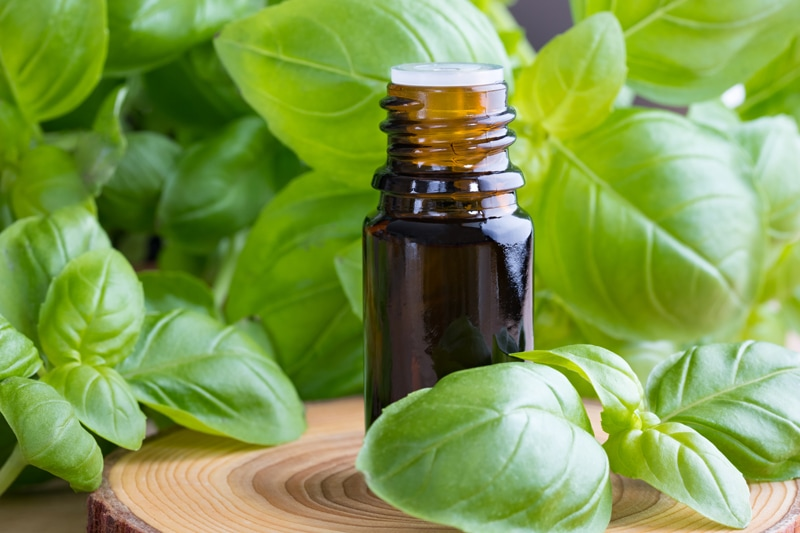

Flavored Extracts – Medicine Flower
I am not being endorsed by Medicine Flower, nor have they even approached me to “test” their products for reviews (though I am open to that :). I just happen to love their products. And just like any other product that I mention on this site, I want to share my good and not-so-good experiences with you. And to be honest, my only not-so-good experience that I have had with these extracts is maybe if I add too much. They are powerful and you tend to underestimate their power.

Tips I have Learned
Never measure over the bowl of ingredients you’re using for the recipe. If you over pour (drop) into the bowl, it can quickly ruin your culinary creation. This is good to practice anytime you are measuring out ingredients.
Also when adding the extracts to the recipe, blend the extract in with the wet ingredients first. If you add it to dry ingredients it will be difficult to disperse the flavor throughout the recipe.
Why do I love these extracts so much:
- Medicine Flower organic food-grade flavors are great for culinary dishes. I love that I can impart so many wonderful flavors together without having to increase the volume or calories of a recipe. I use them in addition to other ingredients.
- They are cold-processed using extraction without the use of any colorants, fillers, diluting agents, or preservatives. They are obtained through a proprietary technology conducted at temperatures below 118 degrees F. This process comprises a multi-stage extraction encompassing initial desiccation, lyophilization, CO2, and HFC extraction.
- They have over 40 incredible flavors!
- Water and oil soluble, all of their flavors are highly concentrated, contain no sugar or calories, and are wheat- and gluten-free.
- Only a few drops are needed to flavor anything from shaved ice, tea, coffee drinks to ice cream, desserts, and smoothies. So that little bottle goes a long way.
- Try a drop or two in your drinking water with ice for a refreshing gourmet treat!
- Medicine Flower Flavor Extracts are also suitable for scenting massage oils, balms, bath oils, soaps, and candles.
- Concentrated Flavor: Consistent comparisons with other products on the market have revealed that their flavor potency is over 30-70 times higher (1-5 drops of our flavors equal up to a teaspoon of other flavors).
- Ingredient: 100% genuine flavor extract *Lemon, orange, rum, and apricot flavors require additional alcohol extraction and may contain up to 5% residual grain alcohol.
© AmieSue.com